แนะนำการใช้งานบอร์ด Arduino Uno R4 Minima (ตอนที่ 1)#
Keywords: Arduino Uno R4 Minima, Renesas R7FA4M1A, FreeRTOS
บทความนี้นำเสนอเกี่ยวกับ Arduino Uno R4 Minima พร้อมตัวอย่างการเขียนโค้ด Arduino เพื่อทดลองใช้งานบอร์ดในเบื้องต้น
- แนะนำบอร์ด Arduino Uno R4
- Arduino Renesas Bootloader
- Arduino Core for Renesas
- ตัวอย่างโค้ดที่ 1: LED Blink
- ตัวอย่างโค้ดที่ 2: LED Breathing Effect
- ตัวอย่างโค้ดที่ 3: Arduino I/O Toggle (No Delay)
- ตัวอย่างโค้ดที่ 4: Fast I/O Toggle with Direct Pin Manipulation
- ตัวอย่างโค้ดที่ 5: Timer-based I/O Toggle
- ตัวอย่างโค้ดที่ 6: FreeRTOS-based I/O Toggle
- ตัวอย่างโค้ดที่ 7: USB-Serial-Bridge
- ตัวอย่างโค้ดที่ 8: EEPROM Write/Read Demo
- ตัวอย่างโค้ดที่ 9: Serial Speed Test
- ตัวอย่างโค้ดที่ 10: Digital & Analog I/O Speed Test
แนะนำบอร์ด Arduino Uno R4#
บอร์ด Arduino Uno R4 มี 2 รุ่น คือ Arduino Uno R4 Minima และ Arduino Uno R4 WiFi ในบทความนี้ จะกล่าวถึงเฉพาะ Uno R4 Minima เท่านั้น
คุณสมบัติของบอร์ด Uno R4 Minima โดยสรุปเป็นข้อ ๆ ดังนี้
- MCU: Renesas
R7FA4M1AB3CFM(Arm Cortex-M4 @ 48MHz) - On-chip Memory:
- SRAM: 32 kB
- Flash: 256 kB
- EEPROM (emulated in Flash): 8 kB
- Operating Voltage: 5V
- Voltage Supply:
- USB Type-C: 5V DC
- VIN pin / DC-jack connector: 6-24V DC
- Switching (buck) regulator: ISL854102FRZ-T (5V/1.2A output max.)
- Digital I/O Pins: 14
- DC Current per I/O Pin: 8mA
- PWM Pins: 6x pins (
D3,D5,D6,D9,D10,D11) - Analog Input Pins: 6 (
A0~A5pins)- ADC Resolution: 14-bit
- Analog Output (DAC): 1 Pin (
A0pin)- DAC Resolution: 12-bit
- USB 2.0 Full-Speed:
- USB CDC:
SerialorSerialUSB(USB CDC virtual COM port)
- USB CDC:
- RTC (Real-Time Clock):
- No pins for battery backup
- 1x OpAmp:
- IN+/IN-:
A1andA2pins - OUT:
A3pin
- IN+/IN-:
- 1x UART:
Serial1(Hardware Serial):D0(SCI9_RX) /D1(SCI9_TX) pins
- 1x I2C:
A4(SDA) pin /A5(SCL) pin - 1x SPI:
D10(SS) pinD11(COPI/MOSI) pinD12(CIPO/MISO) pinD13(SCK) pin
- 1x CAN Bus Controller (CAN 2.0A/CAN 2.0B standard)
D4(CANRX) /D5(CANTX)
AREF(Input) Pin: Analog reference voltageRESET(Input) Pin: MCU reset, active-lowBOOT(Input) Pin: Enter bootloader modeIOREF(Output) Pin: +5V I/O reference voltage- 1x Arduino-style ICSP Connector: 2x3 pins
- 1x SWD Connector: 2x5 pins (2mm pin spacing)
- Arduino USB DFU bootloader: preinstalled
- Schematic: PDF (local copy)
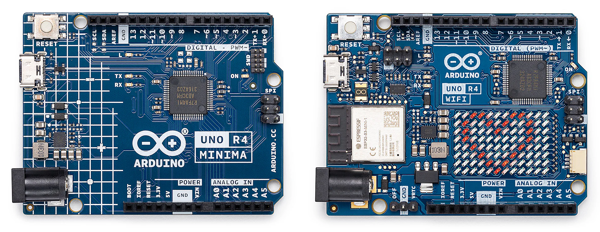
รูป: บอร์ด Uno R4 Minima และ Uno R4 WiFi (Source: Arduino.cc)
Arduino Renesas Bootloader#
ชิป Renesas RA Series มี ROM Boot Firmware ติดตั้งมาจากโรงงาน อยู่ในหน่วยความจำ ROM ภายในชิป ซึ่งสามารถใช้สำหรับการโปรแกรม "เฟิร์มแวร์" (Firmware) ในหน่วยความจำแฟลชภายใน ผ่านอินเทอร์เฟซต่าง ๆ เช่น USB-FS หรือ UART ได้
แต่สำหรับบอร์ด Uno R4 Minima ผู้พัฒนาได้จัดทำ Arduino Renesas Bootloader ไว้สำหรับการอัปโหลด โปรแกรม (ไฟล์เฟิร์มแวร์) ไปยังตัวชิป ผ่านทาง USB และบอร์ด Uno R4 ได้มีการติดตั้ง Arduino Renesas Bootloader มาพร้อมใช้งานแล้ว
Arduino Renesas Bootloader
- ใช้สำหรับชิป Renesas RA series MCUs เช่น
- RA4M1 (Uno R4 Minima and WiFi)
- RA6M5 (Portenta C33)
- ใช้ไลบรารี
TinyUSBสำหรับการเชื่อมต่อผ่าน USB - ใช้โพรโตคอล DFU (Device Firmware Upgrade) ในการโปรแกรมหน่วยความจำ Flash
- ผู้ใช้สามารถเข้าสู่โหมด Arduino Bootloader ได้ โดยการกดปุ่มรีเซตแบบ "Double Tap"
- ไฟล์สำหรับ Arduino Renesas Bootloader มีให้ดาวน์โหลด จำแนกตามบอร์ด
- Uno R4 Minima:
dfu_minima.hex - Uno R4 WiFi:
dfu_wifi.hex - Uno R4 Nano:
dfu_nano.hex
- Uno R4 Minima:
Uno R4: CAN Bus
- ชิป RA4M1 มีวงจร CAN Controller อยู่ภายใน สามารถนำไปใช้งานได้กับระบบบัส CAN (Controller Area Network)
- รองรับการทำงานตามโพรโตคอล CAN 2.0A / 2.0B ความเร็วสูงสุด 1Mbps
- จะต้องมีการต่ออุปกรณ์เสริม คือ โมดูล หรือ วงจร CAN Transceiver
- ขา I/O ของบอร์ด Uno R4 รองรับสัญญาณลอจิกระดับ 5V ดังนั้นจึงต้องใช้กับชิป CAN Transceiver ที่รองรับ 5V เช่น
- MCP2551
- TJA1050
- มีไลบรารีสำหรับการเขียนโค้ดใช้งานได้อย่างสะดวก:
Arduino_CAN - ดูเอกสารเพิ่มเติม: Uno R4 Minima - CAN Tutorial
Uno R4: Ethernet Shield
- เนื่องจากบอร์ด Uno R4 มีรูปแบบ Form Factor เหมือน Uno R3 และมีแรงดันลอจิก +5V เหมือนกัน ดังนั้น จึงรองรับ Arduino Ethernet Shield ที่ใช้ชิป W5100 หรือ W5500 ได้ด้วย
- แต่ชิปไมโครคอนโทรลเลอร์ของ Uno R4 มีขนาดของหน่วยความจำมากกว่า Uno R3 ดังนั้น การเขียนโปรแกรมเพื่อใช้งาน ผ่านเครือข่าย Ethernet / Internet โดยใช้ไลบรารี Arduino Ethernet ก็ลดปัญหาข้อจำกัดเรื่องหน่วยความจำ
Arduino Core for Renesas#
ในการเขียนโปรแกรม Arduino Sketch สำหรับบอร์ด Arduino Uno R4 จะต้องมีการติดตั้ง Arduino Core for Renesas โดยสามารถค้นหาและติดตั้งได้ใน Arduino IDE ในส่วน Boards Manager
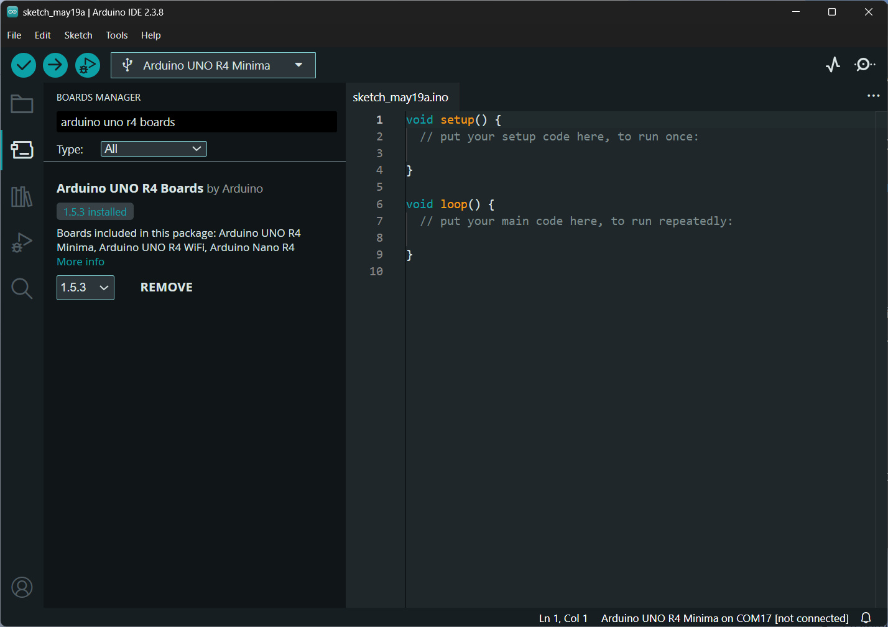
รูป: การติดตั้ง Arduino Core for Renesas
จากนั้นจึงสามารถเลือกบอร์ด Arduino Uno R4 ซึ่งในกรณีตัวอย่างนี้คือ Arduino Uno R4 Minima แล้วทำขั้นตอน Build และ Upload โดยจะต้องเลือกพอร์ต Serial ให้ตรงกับบอร์ดที่เชื่อมต่อใช้งานในขณะนั้น
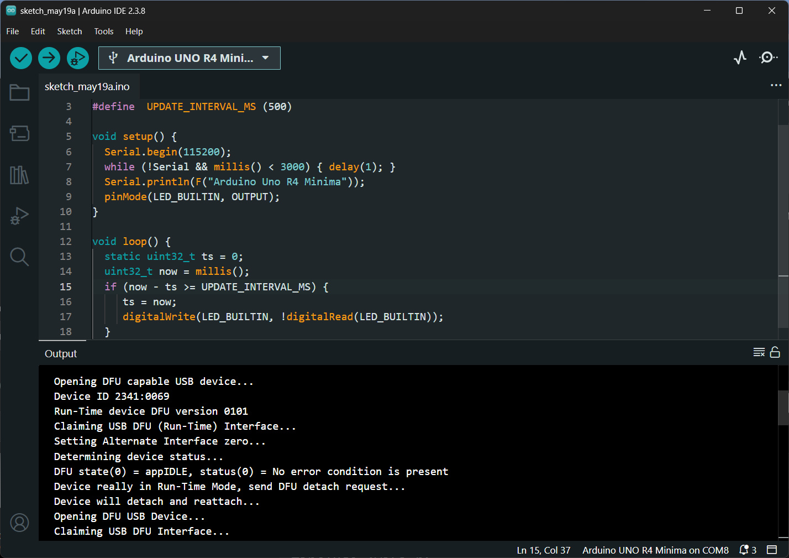
รูป: ตัวอย่างข้อความเอาต์พุตที่เกิดขึ้นในขณะทำขั้นตอน Upload
ถ้ากดปุ่ม BOOT ของบอร์ด แบบ Double-Tap จะทำให้บอร์ด Arduino Uno R4 เข้าสู่โหมด DFU USB และสามารถอัปโหลดไฟล์เฟิร์มแวร์ไปยังบอร์ดได้เช่นกันผ่าน DFU Port ตามรูปตัวอย่าง
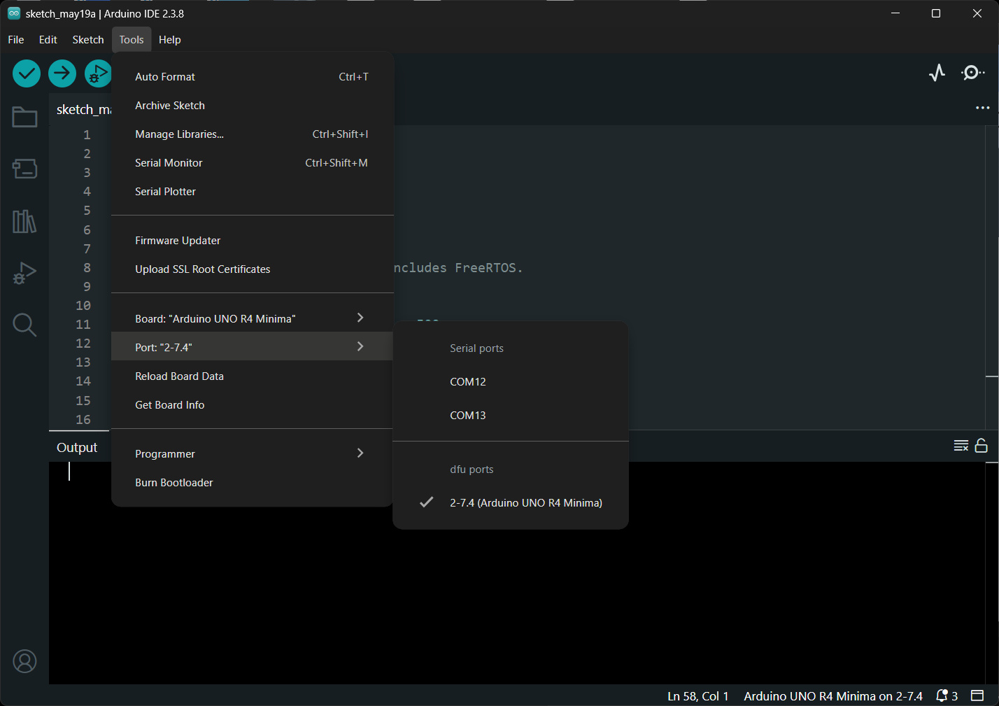
รูป: การอัปโหลดไฟล์เฟิร์มแวร์ไปยังบอร์ดในโหมด DFU USB
ตัวอย่างโค้ดที่ 1: LED Blink#
โค้ดตัวอย่างนี้ใช้สำหรับกระพริบ LED บนบอร์ด Arduino Uno R4 Minima โดยให้ LED
เปลี่ยนสถานะทุก ๆ 500 มิลลิวินาที (0.5 วินาที) และตรวจสอบเวลาโดยการเรียกใช้คำสั่ง millis()
โดยไม่ใช้ delay() ทำให้ไมโครคอนโทรลเลอร์สามารถทำงานอื่นร่วมกันได้ระหว่างรอเวลา
ภายในฟังก์ชัน setup() มีการเปิดใช้งาน Serial Monitor และกำหนดขา LED_BUILTIN
เป็นเอาต์พุต ส่วนในฟังก์ชัน loop() จะตรวจสอบช่วงเวลาที่ผ่านไป และสลับสถานะ LED ด้วยคำสั่ง
digitalWrite() เพื่อให้ LED กระพริบต่อเนื่องอัตโนมัติและมีอัตราคงที่
#include <Arduino.h>
constexpr uint32_t UPDATE_INTERVAL_MS = 500;
void setup() {
Serial.begin(115200);
while (!Serial && millis() < 3000) { delay(1); }
Serial.println(F("Arduino Uno R4 Minima"));
pinMode(LED_BUILTIN, OUTPUT);
}
void loop() {
static uint32_t ts = 0;
uint32_t now = millis();
if (now - ts >= UPDATE_INTERVAL_MS) {
ts = now;
// toggle the LED
digitalWrite(LED_BUILTIN, !digitalRead(LED_BUILTIN));
}
}
ตัวอย่างโค้ดที่ 2: LED Breathing Effect#
โค้ดตัวอย่างนี้สร้างเอฟเฟกต์ "Breathing LED" โดยใช้เทคนิคการสร้างสัญญาณ PWM (Pulse Width Modulation) เพื่อปรับความสว่างของ LED ให้ค่อย ๆ เพิ่มและลดอย่างต่อเนื่อง
หลักการสำคัญคือการใช้คำสั่ง analogWrite() ควบคุมค่า Duty Cycle
ของสัญญาณ PWM ขนาด 8 บิต มีค่าในช่วง 0–255
ค่าดังกล่าวจะสัมพันธ์กับระดับความสว่างของ LED ตัวแปร brightness
ใช้เก็บค่าความสว่างปัจจุบัน ส่วน fade_step ใช้กำหนดทิศทางการเปลี่ยนค่า
เมื่อความสว่างถึงค่าสูงสุดหรือต่ำสุด โปรแกรมจะกลับทิศทางการเปลี่ยนค่าอัตโนมัติ
ทำให้เกิดเอฟเฟกต์คล้ายการหายใจ
#include <Arduino.h>
constexpr int PWM_MAX = 255;
constexpr uint32_t UPDATE_INTERVAL_MS = 5;
void setup() {
Serial.begin(115200);
while (!Serial && millis() < 3000) { delay(1); }
Serial.println(F("Arduino Uno R4 Minima - Breathing LED"));
pinMode(LED_BUILTIN, OUTPUT);
}
void loop() {
static uint32_t ts = 0;
static int brightness = 0;
static int fade_step = 1;
uint32_t now = millis();
if (now - ts >= UPDATE_INTERVAL_MS) {
ts = now;
// Update LED brightness
analogWrite(LED_BUILTIN, brightness);
// Update brightness level
brightness += fade_step;
// Reverse direction at limits
if (brightness >= PWM_MAX) {
brightness = PWM_MAX;
fade_step = -1;
}
else if (brightness <= 0) {
brightness = 0;
fade_step = 1;
}
}
}
ตัวอย่างโค้ดที่ 3: Arduino I/O Toggle (No Delay)#
โค้ดตัวอย่างนี้ใช้สำหรับสลับสถานะของ LED บนบอร์ด Arduino อย่างต่อเนื่อง
โดยไม่ใช้คำสั่ง delay() จึงไม่มีการหน่วงเวลาภายในลูปหลัก
โปรแกรมจะอ่านสถานะปัจจุบันของ LED ด้วย digitalRead()
แล้วกลับค่าลอจิก ก่อนส่งกลับไปยัง digitalWrite() ทำให้ LED
ถูกสลับระหว่าง ON และ OFF (ติด/ดับ) อย่างรวดเร็วที่สุด
ตามความเร็วการทำงานของไมโครคอนโทรลเลอร์
หลักการสำคัญของตัวอย่างนี้คือ การควบคุมขา I/O แบบดิจิทัลและการทำงานของลูปที่ทำซ้ำอย่างต่อเนื่อง โดยไม่มีการหน่วงเวลา แล้วลองใช้เครื่องมือวัด เช่น ออสซิลโลสโคปวัดสัญญาณเอาต์พุต
#include <Arduino.h>
void setup() {
Serial.begin(115200);
while (!Serial && millis() < 3000) { delay(1); }
Serial.println(F("Arduino Uno R4 Minima"));
pinMode(LED_BUILTIN, OUTPUT);
}
void loop() {
// Toggle the LED as fast as possible
digitalWrite(LED_BUILTIN, !digitalRead(LED_BUILTIN));
}
ถัดไปเป็นตัวอย่างการใช้ออสซิลโลสโคปวัดสัญญาณ ซึ่งได้ความถี่ของสัญญาณเอาต์พุตประมาณ 228.67kHz หรือมีคาบเวลาประมาณ 4.373 usec และมีระยะเวลาในการสลับสถานะลอจิก ทุก ๆ 2.122 usec ตามค่าที่วัดได้
รูป: ตัวอย่างการวัดสัญญาณเอาต์พุตที่ขา D13 ด้วยออสซิลโลสโคป (RIGOL DHO814) วัดความกว้างพัลส์ได้ประมาณ 2.12 usec
แม้ว่าจะเขียนโค้ดใน loop() ให้สลับสถานะเอาต์พุตอย่างต่อเนื่อง แต่เมื่อวัดสัญญาณด้วยออสซิลโลสโคป
อาจพบว่าความกว้างของพัลส์ (Pulse Width) หรือคาบสัญญาณบางช่วงไม่คงที่
สาเหตุหลักเกิดจากการทำงานของ Interrupt และระบบเบื้องหลังของ Arduino Framework หรือไมโครคอนโทรลเลอร์ จะต้องทำงานบางช่วงเวลาสำหรับ เช่น USB / Serial communication ซึ่งสามารถแทรกการทำงานของ CPU ได้ชั่วคราว ทำให้ช่วงเวลาระหว่างการสลับสถานะของขา I/O มีระยะเวลายาวขึ้นกว่าปกติในบางจังหวะ
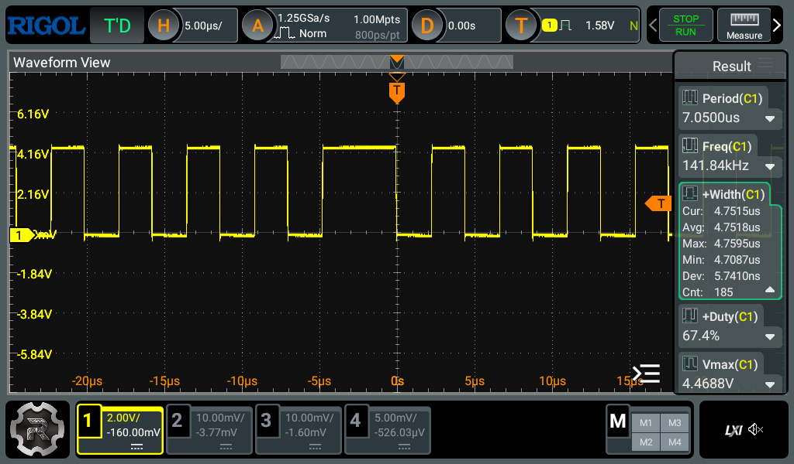
รูป: ตัวอย่างช่วงเวลาที่ตรวจพบว่า สัญญาณพัลส์ที่ความกว้างกว่าปรกติ วัดค่าได้ประมาณ 4.75 usec
ตัวอย่างโค้ดที่ 4: Fast I/O Toggle with Direct Pin Manipulation#
โค้ดตัวอย่างนี้ใช้เทคนิคควบคุมขา I/O โดยตรงผ่านรีจิสเตอร์ของไมโครคอนโทรลเลอร์ Renasas
(Direct Register Access) เพื่อสลับสถานะลอจิกของ LED ด้วยความเร็วสูงที่สุด
แทนการใช้ฟังก์ชันระดับสูงของ Arduino API เช่น digitalWrite() และ digitalRead()
ภายใน loop() โปรแกรมจะเข้าถึงรีจิสเตอร์ PODR11 ของพอร์ต P1.11 โดยตรง
และใช้ตัวดำเนินการ XOR (^= 1) เพื่อกลับสถานะบิตของขา LED
ทำให้ลดขั้นตอนการทำงานของ Arduino Framework ได้อย่างมาก
เมื่อเปรียบเทียบกับตัวอย่างโค้ดก่อนหน้าซึ่งใช้ digitalWrite() และ digitalRead()
การทำงานของโค้ดนี้ จะเร็วกว่ามาก จึงเหมาะสำหรับงานที่ต้องการความเร็วสูง เช่น
การสร้างสัญญาณดิจิทัลความถี่สูง การวัดประสิทธิภาพ I/O หรือการทดลองระดับ low-level
กับฮาร์ดแวร์ไมโครคอนโทรลเลอร์
#include <Arduino.h>
/* Arduino Uno R4 Minima
* Fastest possible LED toggle using direct port access.
* LED_BUILTIN on Uno R4 Minima: D13 -> Port P1.11
*/
#include "r_ioport.h"
// see: https://renesas.github.io/fsp/group___i_o_p_o_r_t.html
void setup() {
Serial.begin(115200);
while (!Serial && millis() < 3000) { delay(1);}
Serial.println(F("Arduino Uno R4 Minima - Fast LED Toggle"));
pinMode(LED_BUILTIN, OUTPUT);
}
// #define R_PORT0 ((R_PORT0_Type *) R_PORT0_BASE)
// see: https://github.com/arduino/ArduinoCore-renesas/variants/MINIMA/
// -> includes/ra/fsp/src/bsp/cmsis/Device/RENESAS/Include/R7FA4M1AB.h
void loop() {
// Toggle the P1.11 pin directly
R_PORT1->PODR_b.PODR11 ^= 1;
}
จากการทดลองวัดสัญญาณเอาต์พุตด้วยออสซิลโลสโคป จะเห็นได้ว่า ความถี่ของสัญญาณได้ประมาณ 1 MHz (มีคาบประมาณ 1 usec และมีความกว้างพัลส์ประมาณ 500 nsec) ซึ่งเร็วกว่าการทำงานของโค้ดในตัวอย่างที่แล้ว
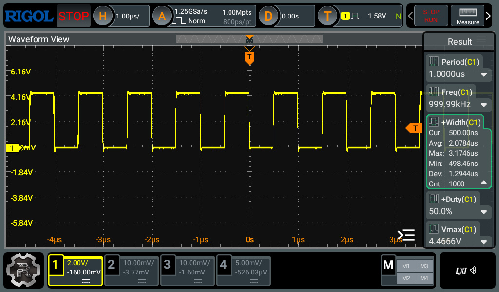
รูป: ตัวอย่างการวัดสัญญาณเอาต์พุตด้วยออสซิลโลสโคป
การทำงานบางช่วงเวลาของ Arduino Framework ในเบื้องหลัง ส่งผลให้ระยะเวลาในการสลับลอจิกของสัญญาณเอาต์พุตไม่คงที่ได้ ตามตัวอย่างรูปสัญญาณที่วัดได้ต่อไปนี้
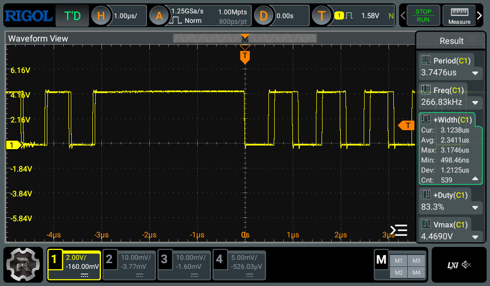
รูป: ตัวอย่างสัญญาณในช่วงเวลาที่มีระยะเวลาในสลับลอจิกไม่คงที่
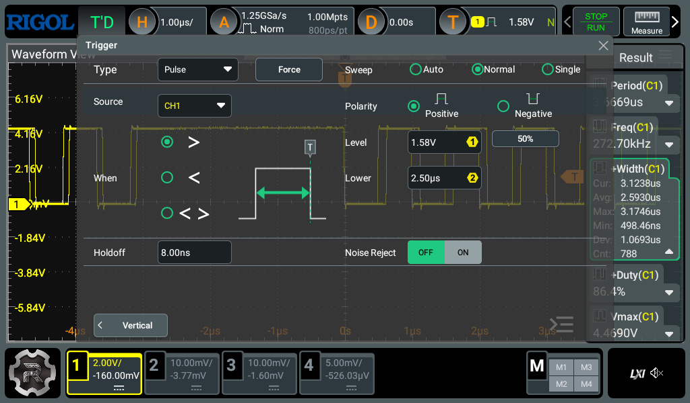
รูป: ตัวอย่างการตั้งค่า Trigger Type โดยเลือกเป็น Pulse เพื่อตรวจสอบความกว้างของพัลส์ ที่มากกว่าค่าที่กำหนดไว้ เช่น 2.5 usec (โดยให้มากกว่า 0.5 usec) ซึ่งจะพบว่า มีบางช่วงเวลาที่มีสัญญาณพัลส์ กว้างกว่าค่าในช่วงปรกติอย่างเห็นได้ชัด
การใช้คำสั่งระดับล่าง (Low-Level Programming) เพื่อเข้าถึงรีจิสเตอร์ที่เกี่ยวข้องกับ I/O และกำหนดค่าลอจิกโดยตรง อีกรูปแบบหนึ่ง มีตัวอย่างดังนี้ จะเห็นได้ว่า ในตัวอย่างนี้มีการปิดการทำงานของอินเทอร์รัพท์ของระบบด้วยคำสั่ง noInterrupts()
R_PORT1->PCNTR3 คือ การเข้าถึงรีจิสเตอร์ควบคุมพอร์ต I/O ของไมโครคอนโทรลเลอร์โดยตรง
ในกรณีนี้เป็นรีจิสเตอร์ Port Control Register หมายเลข 3 ของพอร์ต PORT1
เพื่อสั่งให้ขา I/O เปลี่ยนสถานะลอจิกแบบ Set/Reset ได้โดยตรง
#include <Arduino.h>
// P111 bit mask in the two halves of PCNTR3.
static constexpr uint32_t P111_SET = (1UL << 11); // POSR.B11
static constexpr uint32_t P111_RESET = (1UL << (11 + 16)); // PORR.B11
void setup() {
// pinMode() handles the PFS unlock dance (PWPR), sets PMR=GPIO, and
// PDR=output for P111. After this point we never touch the pin
// through the Arduino API again.
pinMode(13, OUTPUT);
// Stop SysTick / USB / UART IRQs from stealing cycles mid-loop.
noInterrupts();
// Toggle the I/O pin (D13 / P111 pin)
for (;;) {
R_PORT1->PCNTR3 = P111_SET;
R_PORT1->PCNTR3 = P111_RESET;
}
}
void loop() {
}
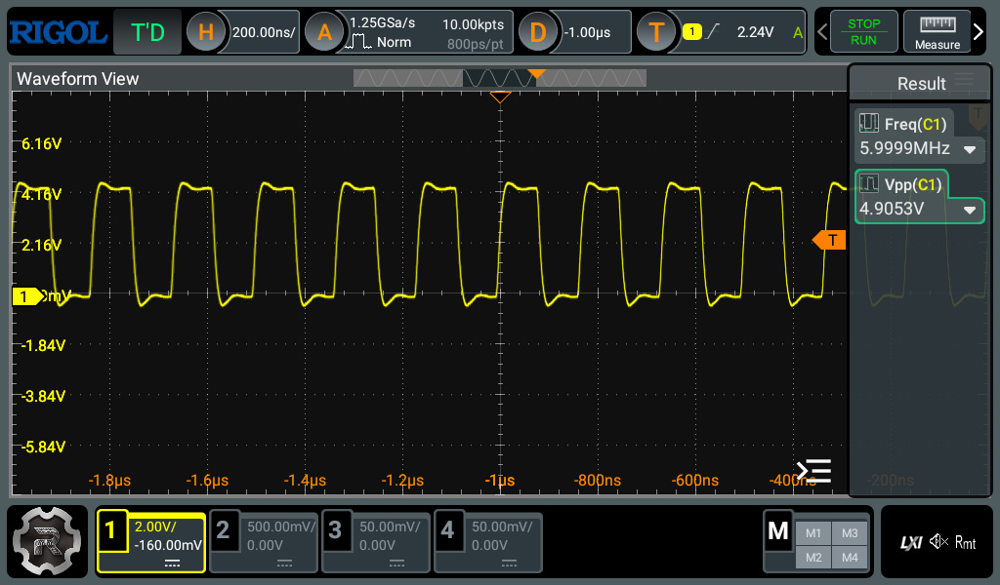
รูป: ตัวอย่างสัญญาณเอาต์พุต วัดความถี่ได้ 6MHz
ตัวอย่างโค้ดที่ 5: Timer-based I/O Toggle#
โค้ดตัวอย่างนี้ใช้ฮาร์ดแวร์ GPT (General PWM Timer) ของไมโครคอนโทรลเลอร์ Renesas R7FA4M1
เพื่อสร้างสัญญาณเอาต์พุตที่มีความถี่คงที่ และแม่นยำ โดยไม่ต้องอาศัยการวนลูปใน loop()
หลักการสำคัญคือการตั้งค่า Timer ให้ทำงานแบบ Periodic Interrupt ที่มีอัตรา Toggle Rate เช่น
2 kHz, 20 kHz หรือ 200 kHz
และเมื่อ Timer Overflow จะเรียกฟังก์ชัน timer_callback() อัตโนมัติ ภายในฟังก์ชัน Callback
ดังกล่าว มีการสลับสถานะขา P1.11 (D13) และใช้เวลาในการทำงานของซีพียูให้น้อยที่สุด
แนวทางนี้แตกต่างจากตัวอย่างก่อนหน้า ซึ่งใช้ CPU ทำคำสั่งเพื่อวนลูปตรวจสอบและสลับสถานะขาโดยตรง ทำให้ความกว้างพัลส์อาจไม่คงที่จากการทำงานเบื้องหลังของระบบ แต่ในตัวอย่างนี้ วงจร Hardware Timer จะเป็นตัวกำหนดจังหวะเวลาแทน CPU จึงเหมาะสำหรับงานสร้างสัญญาณความถี่สูง แต่ถ้าจะใช้ความถี่สูงมาก ๆ จะมีข้อจำกัดของ Interrupt Overhead
#include <Arduino.h>
// Arduino Uno R4 core version 1.5.3
// see: https://github.com/arduino/ArduinoCore-renesas/releases
#include <FspTimer.h>
#include "bsp_api.h"
constexpr float FREQ_HZ = 2e5f; // Toggle rate: 200 kHz
FspTimer timer;
void timer_callback(timer_callback_args_t *p_args) {
(void)p_args;
R_PORT1->PODR_b.PODR11 ^= 1; // Toggle D13 = P111
}
bool initTimer() {
// Timer type variable required by old API
uint8_t timer_type = GPT_TIMER;
// Request available GPT timer
int8_t channel = FspTimer::get_available_timer(timer_type);
if (channel < 0) {
Serial.println("No timer available!");
return false;
}
Serial.print("Using channel: ");
Serial.println(channel);
bool ok = timer.begin(
TIMER_MODE_PERIODIC,
timer_type,
channel,
FREQ_HZ,
50.0f,
timer_callback);
if (!ok) {
Serial.println("Timer begin failed!");
return false;
}
ok = timer.setup_overflow_irq();
if (!ok) {
Serial.println("IRQ setup failed");
return false;
}
ok = timer.open();
if (!ok) {
Serial.println("Timer open failed");
return false;
}
ok = timer.start();
if (!ok) {
Serial.println("Timer start failed");
return false;
}
return true;
}
void setup() {
Serial.begin(115200);
while (!Serial && millis() < 3000) { delay(1); }
Serial.println("Uno R4 Minima - GPT Timer Test");
pinMode(LED_BUILTIN, OUTPUT);
if (!initTimer()){
while(1) { delay(1); } //blocking
}
Serial.println("Timer running");
}
ตัวอย่างการวัดสัญญาณเอาต์พุตด้วยออสซิลโลสโคป ซึ่งมีการทดลองใช้อัตรา Toggle Rate ที่แตกต่างกัน
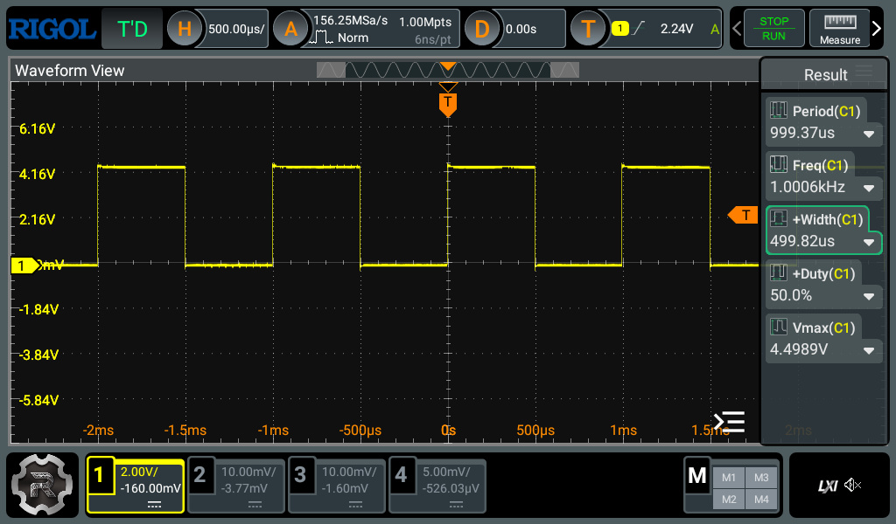
รูป: สัญญาณเอาต์พุต วัดความถี่ได้ 1 kHz (Toggle Rate: 2 kHz)
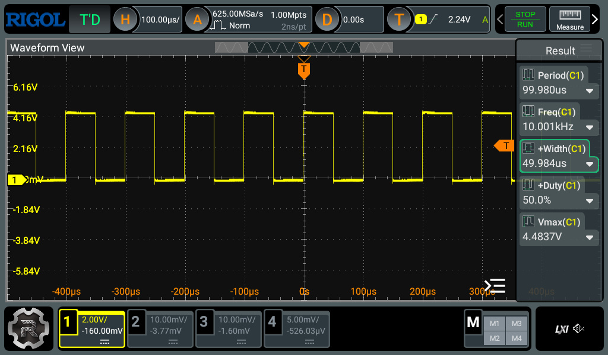
รูป: สัญญาณเอาต์พุต วัดความถี่ได้ 10 kHz (Toggle Rate: 20 kHz)
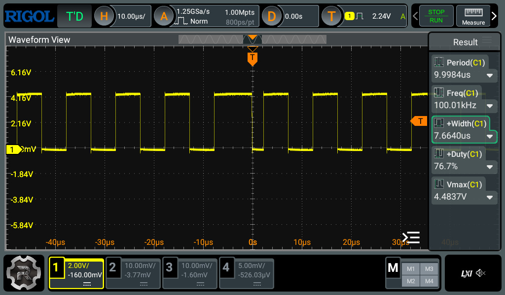
รูป: สัญญาณเอาต์พุต วัดความถี่ได้ 100 kHz (Toggle Rate: 200 kHz)
ตัวอย่างโค้ดที่ 6: FreeRTOS-based I/O Toggle#
โค้ดตัวอย่างนี้สาธิตการใช้ระบบปฏิบัติการเวลาจริง FreeRTOS ร่วมกับ Arduino Uno R4 Minima โดยสร้างทาสก์ Task) แยกสำหรับควบคุมการกระพริบ LED
หลักการสำคัญคือการแบ่งงานออกเป็นทาสก์อิสระ และให้ FreeRTOS scheduler
เป็นผู้จัดสรรเวลาการทำงานของ CPU ภายในฟังก์ชัน ledTask() ซึ่งจะสลับสถานะ LED
แล้วหยุดรอด้วยคำสั่ง vTaskDelay() เป็นการหน่วงเวลาแบบ Non-blocking ของ FreeRTOS
ทำให้ทาสก์อื่น (ถ้ามี) สามารถทำงานได้พร้อม ๆ กันได้ในระบบ
pdMS_TO_TICKS() เป็น C Macro ของ FreeRTOS
ที่ใช้แปลงหน่วยเวลา มิลลิวินาที (ms) ให้เป็นจำนวน Ticks ของระบบปฏิบัติการ (RTOS ticks)
vTaskDelay(pdMS_TO_TICKS(BLINK_INTERVAL_MS)); จะทำให้ทาสก์หน่วงเวลาไว้ ตามค่าที่กำหนดไว้โดย
BLINK_INTERVAL_MS (เช่น 5 มิลลิวินาที)
ในฟังก์ชัน setup() มีการสร้างทาสก์ ด้วยคำสั่ง xTaskCreate() และเริ่ม FreeRTOS Scheduler
ด้วย vTaskStartScheduler() หลังจากนั้น FreeRTOS จะเข้าควบคุมการทำงานแทน loop()
ของ Arduino
#include <Arduino.h>
#include <Arduino_FreeRTOS.h>
/*
Arduino Uno R4 Minima
FreeRTOS LED Blink Example
The Renesas Arduino core already includes FreeRTOS.
*/
constexpr uint32_t BLINK_INTERVAL_MS = 5;
// Task entry function for LED toggle
void ledTask(void *pvParameters) {
(void) pvParameters;
pinMode(LED_BUILTIN, OUTPUT);
while (1) {
digitalWrite(LED_BUILTIN, !digitalRead(LED_BUILTIN));
// FreeRTOS delay
vTaskDelay( pdMS_TO_TICKS(BLINK_INTERVAL_MS) );
}
}
void setup() {
Serial.begin(115200);
while (!Serial && millis() < 3000) { delay(1); }
Serial.println("Uno R4 Minima - FreeRTOS Blink");
#ifdef tskKERNEL_VERSION_NUMBER
Serial.print(F("FreeRTOS Version : "));
Serial.println(tskKERNEL_VERSION_NUMBER);
#else
Serial.println(F("FreeRTOS version macro not found"));
#endif
// Create a FreeRTOS task
BaseType_t status = xTaskCreate(
ledTask, // task function
"LED", // task name
256, // task stack size (in words)
nullptr, // task parameters (arguments)
1, // task priority
nullptr); // task handle
if (status != pdPASS) {
Serial.println("Task creation failed!");
while (1) {} // Blocking
}
Serial.println("Task created...");
vTaskStartScheduler(); // Start the FreeRTOS scheduler
for(;;);
}
void loop() {
}
ตัวอย่างการวัดสัญญาณเอาต์พุตด้วยออสซิลโลสโคป มีดังนี้
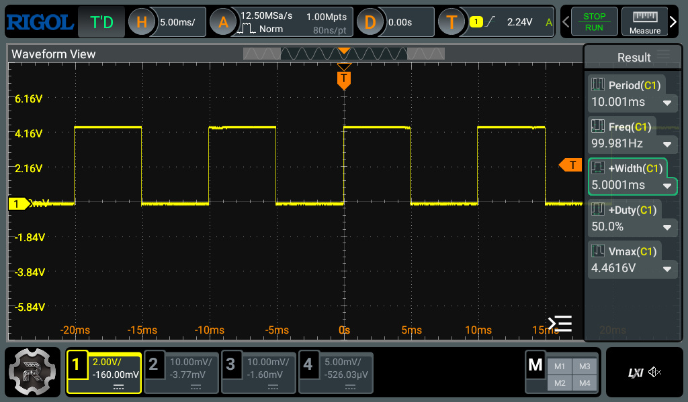
รูป: สัญญาณเอาต์พุต วัดความถี่ได้ 100 Hz (คาบเวลา 10 msec)
ตัวอย่างโค้ดที่ 7: USB-Serial-Bridge#
โค้ดตัวอย่างนี้สร้าง USB-to-UART Bridge โดยใช้บอร์ด Arduino Uno R4 Minima
โดยทำหน้าที่รับส่งข้อมูลระหว่าง USB CDC (Serial) และฮาร์ดแวร์ UART (Serial1)
แบบสองทิศทาง
หลักการสำคัญคือ การตรวจสอบข้อมูลที่เข้ามาในแต่ละพอร์ตด้วยคำสั่ง available() ของ Serial หรือ Serial1
แล้วส่งต่อข้อมูลไปยังอีกพอร์ตด้วยคำสั่ง read() และ write() ทำให้บอร์ดสามารถทำงานเสมือนตัวแปลง
หรือตัวเชื่อมต่อระหว่าง USB กับ Serial ได้
ในตัวอย่างนี้กำหนด Baud Rate สูงถึง 1000000 เพื่อรองรับการสื่อสารความเร็วสูง โดย Serial
ใช้เชื่อมต่อกับคอมพิวเตอร์ผ่าน USB ส่วน Serial1 ใช้ขา D0 (RX) และ D1 (TX)
สำหรับเชื่อมต่อกับอุปกรณ์ UART ภายนอก
#include <Arduino.h>
constexpr uint32_t BAUD_RATE = 1000000; // Try 1M or 4M baud rate
void setup() {
// USB CDC
Serial.begin(BAUD_RATE);
while (!Serial && millis() < 3000 ) { delay(1); }
// Hardware UART (D0 = RX, D1 = TX)
Serial1.begin(BAUD_RATE);
Serial.println("USB <-> UART Bridge Ready");
Serial.print("Baud: ");
Serial.println(BAUD_RATE);
}
void loop() {
// USB -> UART
while (Serial.available()) {
Serial1.write(Serial.read());
}
// UART -> USB
while (Serial1.available()) {
Serial.write(Serial1.read());
}
}
ในการทดลอง แนะนำให้ใช้ลวดสายไฟ เชื่อมต่อขา TX กับ RX เข้าด้วยกัน (ทดสอบการทำงานแบบ Loopback) แล้วใช้ออสซิลโลสโคป วัดสัญญาณที่ขา TX
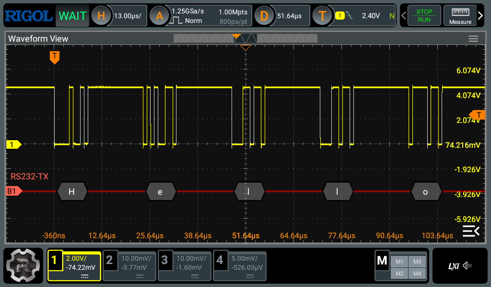
รูป: ตัวอย่างการวัดสัญญาณ TX และการวิเคราะห์สัญญาณตามโพรโตคอล RS232 (Serial)
ซึ่งแสดงให้เห็นข้อความ (เป็นรหัส ASCII) "Hello" ตามลำดับ

รูป: ช่วงเวลาที่ส่งข้อมูลหนึ่งไบต์ ตรงกับตัวอักขระ 'H'
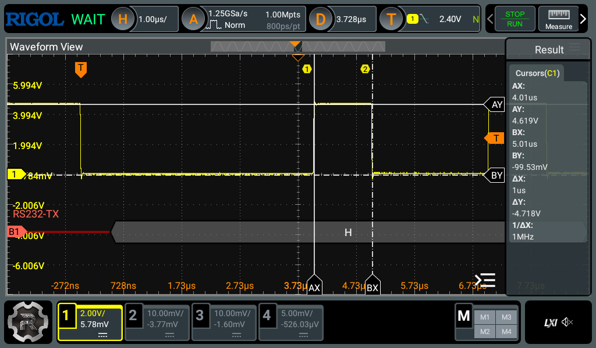
รูป: ตัวอย่างการใช้ Cursor ของออสซิลโลสโคป วัดความกว้างของพัลส์บนสัญญาณ TX

รูป: ตัวอย่างการตั้งค่าสำหรับ RIGOL DHO814 เพื่อ Decode สัญญาณสำหรับ RS232
ตัวอย่างโค้ดที่ 8: EEPROM Write/Read Demo#
ตัวอย่างโค้ดนี้สาธิตการใช้งานไลบรารี EEPROM ของ Arduino Uno R4
เพื่อจัดเก็บและอ่านข้อมูลถาวรจากหน่วยความจำ Flash ที่จำลองการทำงานแบบ EEPROM
โดยใช้ข้อความ UUID แบบสุ่ม เป็นหมายเลขที่ใช้ระบุบอร์ดได้ (Board Identification)
หลักการทำงานของโปรแกรมมีดังนี้
- กำหนดตำแหน่งหน่วยความจำ EEPROM สำหรับเก็บค่า Magic Number (ในแอดเดรส
MAGIC_ADDR) และข้อมูล UUID ที่มีความยาว 36 ไบต์ (เริ่มต้นที่แอดเดรสUUID_ADDR) - ใช้ค่า
MAGIC_VALUE(ไม่เท่ากับ0x00) เพื่อตรวจสอบว่ามีการบันทึก UUID ไว้แล้วหรือไม่ - ฟังก์ชัน
generateUUID()ใช้สร้าง UUID แบบสุ่มตามรูปแบบ UUID Version 4 ความยาว 36 ตัวอักษร - ฟังก์ชัน
saveUUID()ใช้เขียน UUID ลง EEPROM ทีละไบต์ - ฟังก์ชัน
loadUUID()ใช้อ่าน UUID จาก EEPROM กลับมาเก็บในตัวแปร - ในฟังก์ชัน
setup()โปรแกรมจะอ่านค่า Magic Number จาก EEPROM หากยังไม่มีข้อมูล UUID จะสร้างใหม่ แล้วบันทึกลง EEPROM - หากมีข้อมูลอยู่แล้ว จะอ่าน UUID เดิมกลับมาใช้งาน และค่าผ่าน Serial Monitor
ข้อควรระวัง:
- EEPROM ของ Arduino Uno R4 เป็นการจำลองบน Flash memory จึงมีจำนวนรอบการเขียนจำกัด
ดังนั้นไม่ควรเขียนข้อมูลซ้ำอย่างต่อเนื่องภายใน
loop()ควรเขียนข้อมูลเฉพาะเมื่อมีการเปลี่ยนแปลงจริงเท่านั้น
#include <EEPROM.h>
#define MAGIC_ADDR 0
#define UUID_ADDR 4
#define MAGIC_VALUE 0x42
constexpr int UUID_LENGTH = 36;
char boardUUID[ UUID_LENGTH + 1];
// Generate pseudo UUID v4
void generateUUID(char *uuid) {
const char *hex = "0123456789abcdef";
// Fill with '-'
for (int i = 0; i < UUID_LENGTH; i++) {
uuid[i] = '-';
}
for (unsigned int i = 0; i < UUID_LENGTH; i++) {
if (i == 8 || i == 13 || i == 18 || i == 23) {
uuid[i] = '-';
} else {
uuid[i] = hex[random(16)];
}
}
// UUID version 4
uuid[14] = '4';
// UUID variant
uuid[19] = hex[8 + random(4)];
uuid[UUID_LENGTH] = '\0';
}
void saveUUID(const char *uuid) {
for (int i = 0; i < (UUID_LENGTH+1); i++) {
EEPROM.write(UUID_ADDR + i, uuid[i]);
}
EEPROM.write(MAGIC_ADDR, MAGIC_VALUE);
}
void loadUUID(char *uuid) {
for (int i = 0; i < (UUID_LENGTH+1); i++) {
uuid[i] = EEPROM.read(UUID_ADDR + i);
}
}
void setup() {
Serial.begin(115200);
while (!Serial && millis() < 3000) { delay(1); }
randomSeed(analogRead(A0) + micros());
// To reset the MAGIC number in EEPROM
//EEPROM.write(MAGIC_ADDR, 0x00);
byte magic = EEPROM.read(MAGIC_ADDR);
if (magic != MAGIC_VALUE) {
Serial.println( F("No UUID found. Generating UUID..."));
generateUUID(boardUUID);
saveUUID(boardUUID);
Serial.println(F("UUID saved to EEPROM."));
} else {
loadUUID(boardUUID);
Serial.println(F("UUID loaded from EEPROM.") );
}
Serial.print(F("Board UUID: "));
Serial.println(boardUUID);
}
void loop() {
}

รูป: ตัวอย่างข้อความที่แสดงผ่าน Serial Monitor เมื่อโปรแกรมทำงาน
ตัวอย่างโค้ดที่ 9: Serial Speed Test#
ตัวอย่างโค้ดนี้สาธิตการวัดอัตราการส่งข้อมูลของบอร์ด Arduino Uno R4 Minima ผ่านการสื่อสารแบบ USB-CDC Serial โดยทำการส่งข้อมูลแบบไบนารีออกทางพอร์ต USB ไปยังคอมพิวเตอร์ และวัดเวลาที่ใช้ในการส่งข้อมูลทั้งหมด เพื่อคำนวณอัตราการส่งข้อมูลจริงของระบบ
โปรแกรมสร้างบัฟเฟอร์ข้อมูลขนาด 1024 ไบต์ (BLOCK_SIZE) และกำหนดรูปแบบข้อมูลตัวอย่างด้วยข้อความ "0123456789ABCDEF" ซึ่งถูกคัดลอกซ้ำลงในบัฟเฟอร์ จากนั้นโปรแกรมจะส่งข้อมูลบัฟเฟอร์ดังกล่าวซ้ำจำนวน 100 ครั้ง (N = 100) ผ่านฟังก์ชัน Serial.write()
การวัดเวลาจะเริ่มต้นก่อนการส่งข้อมูลด้วยฟังก์ชัน micros() และหยุดเวลาเมื่อข้อมูลทั้งหมดถูกส่งออกเรียบร้อยแล้ว โดยใช้ Serial.flush() เพื่อรอให้ USB-CDC ส่งข้อมูลในบัฟเฟอร์ภายในออกครบทั้งหมดจริง ก่อนอ่านค่าเวลาสิ้นสุด
ผลลัพธ์จะแสดงผ่าน Serial Monitor ในหน่วยไมโครวินาที (µs) และเมกะบิตต่อวินาที (Mbps)
// Arduino Uno R4 Minima: USB-CDC Throughput Test
// - Sends 1024-byte blocks repeatedly over USB-CDC
// - Repeats N times
// - Measures total transmission time
// - Computes average time per bit and effective bitrate
#include <cstring> // for std::memcpy()
constexpr uint32_t BAUD_RATE = 1000000; // any value
constexpr size_t BLOCK_SIZE = 1024; // bytes per block
constexpr size_t N = 100; // number of blocks to send
constexpr char PATTERN[] = "0123456789ABCDEF";
constexpr size_t PATERN_LEN = sizeof(PATTERN);
void test() {
// Fill buffer with test pattern
uint8_t txBuffer[BLOCK_SIZE];
size_t byte_count = 0;
uint8_t *ptr = txBuffer;
for (size_t i = 0; i < BLOCK_SIZE / 16; i++) {
std::memcpy(ptr, PATTERN, PATERN_LEN);
ptr += 16;
byte_count += 16;
}
// Fill any remaining bytes if BLOCK_SIZE is not a multiple of 16
if (BLOCK_SIZE > byte_count) {
std::memcpy(ptr, PATTERN, BLOCK_SIZE - byte_count);
}
// Start timing
uint32_t t0 = micros();
for (size_t i = 0; i < N; i++) {
Serial.write(txBuffer, BLOCK_SIZE);
}
// Wait until all USB data transmitted
Serial.flush();
uint32_t t1 = micros();
// Compute statistics
uint32_t elapsed_us = t1 - t0;
uint64_t totalBytes = (uint64_t)BLOCK_SIZE * N;
uint64_t totalBits = totalBytes * 8;
double seconds = elapsed_us / 1e6;
double avgTimePerBit_us = (double)elapsed_us / (double)totalBits;
double bitrate = (double)totalBits / seconds;
Serial.println();
Serial.println("=== Results ===");
Serial.print("Block size : ");
Serial.print(BLOCK_SIZE); Serial.println(" bytes");
Serial.print("Number of blocks : ");
Serial.println(N);
Serial.print("Total bytes sent : ");
Serial.println((uint32_t)totalBytes);
Serial.print("Total bits sent : ");
Serial.println((uint32_t)totalBits);
Serial.print("Elapsed time : ");
Serial.print(elapsed_us);
Serial.println(" us");
Serial.print("Average time/bit : ");
Serial.print(avgTimePerBit_us, 6);
Serial.println(" us");
Serial.print("Effective bitrate : ");
Serial.print(bitrate / 1e6, 3);
Serial.println(" Mbps");
Serial.println();
Serial.println("Test completed...\n");
}
void setup() {
Serial.begin(BAUD_RATE);
while (!Serial && millis() < 3000) { delay(1); }
Serial.println();
Serial.println("\n=== USB-CDC Speed Test ===");
}
void loop() {
test();
delay(5000);
}
จากการทดสอบพบว่า อัตราการส่งข้อมูลออก วัดได้ประมาณ 3.376 Mbps ตามที่แสดงในข้อความเอาต์พุตต่อไปนี้

รูป: ตัวอย่างข้อความที่แสดงผ่าน Serial Monitor เมื่อโปรแกรมทำงาน
ตัวอย่างโค้ดที่ 10: Digital & Analog I/O Speed Test#
ตัวอย่างโค้ดนี้สาธิตการวัดความเร็วหรือระยะเวลาในการทำงานของฟังก์ชันพื้นฐาน
สำหรับ I/O ของ Arduino Uno R4 Minima ได้แก่ analogRead(),
analogWrite(), digitalWrite() และ digitalRead()
โดยใช้วงจรนับจำนวนไซเคิลสำหรับการทำงานของซีพียู (CPU Cycle)
ARM Cortex-M4 ที่เรียกว่า DWT Cycle Counter (
Data Watchpoint and Trace Cycle Counter)
หลักการทำงานของโปรแกรมคือ การอ่านค่าตัวนับคล็อกไซเคิลก่อนและหลังการเรียกใช้ฟังก์ชันที่ต้องการทดสอบ
จากนั้นนำผลต่างของจำนวนคล็อกไซเคิลมาคำนวณเป็นระยะเวลาในการทำงานของฟังก์ชันนั้น
โดยมีการทำซ้ำหลายครั้ง (TEST_COUNT) แล้วคำนวณค่าเฉลี่ย
เพื่อลดผลกระทบจากความคลาดเคลื่อนและความแปรปรวนของเวลาในการทำงาน
นอกจากนี้ โปรแกรมยังอ่านค่าความถี่สัญญาณนาฬิกาของซีพียูจริงในขณะรันโปรแกรม
ผ่านตัวแปร SystemCoreClock ของ ARM CMSIS API
ฟังก์ชันที่ใช้ทดสอบมีดังนี้
measureAnalogRead()ใช้วัดเวลาที่ใช้ในการอ่านค่า ADC จากขาA0และA1measureAnalogWrite()ใช้วัดเวลาที่ใช้ในการสร้างสัญญาณแอนะล็อกเอาต์พุตด้วยanalogWrite()measureDigitalWrite()ใช้วัดเวลาที่ใช้ในการเปลี่ยนสถานะลอจิกของขา GPIOmeasureDigitalRead()ใช้วัดเวลาที่ใช้ในการอ่านสถานะลอจิกจากขาอินพุตดิจิทัล
ผลการวัดจะถูกแสดงผ่าน Serial Monitor ทั้งในหน่วยจำนวนคล็อกไซเคิลเฉลี่ย และเวลาเฉลี่ยในหน่วยไมโครวินาที (µs)
// Arduino Uno R4 Minima: Measure execution time of:
// - analogRead()
// - analogWrite()
// - digitalWrite()
// - digitalRead()
// using ARM Cortex-M4 DWT Cycle Counter.
constexpr uint32_t TEST_COUNT = 10000;
constexpr int GPIO_IN = 2;
constexpr int GPIO_OUT = 13;
uint32_t cpu_clk_hz = 0;
inline uint32_t getCpuFreqHz() {
// CMSIS global variable
SystemCoreClockUpdate();
return SystemCoreClock;
}
// Convert cycles to microseconds
double cyclesToUs(uint32_t cycles) {
return ((double)cycles * 1e6) / cpu_clk_hz;
}
// Enable DWT Cycle Counter
void enableCycleCounter() {
// Enable trace subsystem
CoreDebug->DEMCR |= CoreDebug_DEMCR_TRCENA_Msk;
// Reset cycle counter
DWT->CYCCNT = 0;
// Enable cycle counter
DWT->CTRL |= DWT_CTRL_CYCCNTENA_Msk;
}
// Measure analogRead()
uint32_t measureAnalogRead() {
volatile uint16_t value;
uint64_t totalCycles = 0;
for (uint32_t i = 0; i < TEST_COUNT; i++) {
uint32_t startTime = DWT->CYCCNT;
value = analogRead(A0);
value = analogRead(A1);
uint32_t endTime = DWT->CYCCNT;
totalCycles += (endTime - startTime);
}
return totalCycles / (TEST_COUNT * 2);
}
// Measure analogWrite()
uint32_t measureAnalogWrite() {
uint64_t totalCycles = 0;
for (uint32_t i = 0; i < TEST_COUNT; i++) {
uint32_t startTime = DWT->CYCCNT;
analogWrite(A0, 0);
analogWrite(A0, 4095);
uint32_t endTime = DWT->CYCCNT;
totalCycles += (endTime - startTime);
}
return totalCycles / (TEST_COUNT * 2);
}
// Measure digitalWrite()
uint32_t measureDigitalWrite() {
uint64_t totalCycles = 0;
for (uint32_t i = 0; i < TEST_COUNT; i++) {
uint32_t startTime = DWT->CYCCNT;
digitalWrite(GPIO_OUT, HIGH);
digitalWrite(GPIO_OUT, LOW);
uint32_t endTime = DWT->CYCCNT;
totalCycles += (endTime - startTime);
}
// divide by 2 because two calls were measured
return totalCycles / (TEST_COUNT * 2);
}
// Measure digitalRead()
uint32_t measureDigitalRead() {
volatile int value;
uint64_t totalCycles = 0;
for (uint32_t i = 0; i < TEST_COUNT; i++) {
uint32_t startTime = DWT->CYCCNT;
value = digitalRead(GPIO_IN);
uint32_t endTime = DWT->CYCCNT;
totalCycles += (endTime - startTime);
}
return totalCycles / (TEST_COUNT);
}
void test() {
uint32_t cycles;
// analogRead() test
cycles = measureAnalogRead();
Serial.println();
Serial.println("analogRead()");
Serial.print("- Average cycles : ");
Serial.println(cycles);
Serial.print("- Average time : ");
Serial.print(cyclesToUs(cycles), 3);
Serial.println(" us");
cycles = measureAnalogWrite();
Serial.println();
Serial.println("analogWrite()");
Serial.print("- Average cycles : ");
Serial.println(cycles);
Serial.print("- Average time : ");
Serial.print(cyclesToUs(cycles), 3);
Serial.println(" us");
// digitalWrite() test
cycles = measureDigitalWrite();
Serial.println();
Serial.println("digitalWrite()");
Serial.print("- Average cycles : ");
Serial.println(cycles);
Serial.print("- Average time : ");
Serial.print(cyclesToUs(cycles), 3);
Serial.println(" us");
// digitalRead() test
cycles = measureDigitalRead();
Serial.println();
Serial.println("digitalRead()");
Serial.print("- Average cycles : ");
Serial.println(cycles);
Serial.print("- Average time : ");
Serial.print(cyclesToUs(cycles), 3);
Serial.println(" us");
Serial.println();
Serial.println("Benchmark completed.");
}
void setup() {
Serial.begin(115200);
while (!Serial && millis() < 5000) { delay(1); }
pinMode(GPIO_OUT, OUTPUT);
pinMode(GPIO_IN, INPUT_PULLUP);
analogReadResolution(12);
enableCycleCounter();
Serial.println();
Serial.println("======================================");
Serial.println("Arduino Uno R4 Timing Benchmark");
Serial.println("======================================");
cpu_clk_hz = getCpuFreqHz();
Serial.print("CPU Freq.: ");
Serial.println( cpu_clk_hz);
}
void loop() {
test();
delay(5000);
}
จากการทดสอบ จะได้ค่าจากข้อความเอาต์พุตดังนี้
analogRead()ใช้เวลาประมาณ 23.5 us ต่อหนึ่งครั้งanalogWrite()ใช้เวลาประมาณ 10.167 us ต่อหนึ่งครั้งdigitalWrite()ใช้เวลาประมาณ 0.979 us ต่อหนึ่งครั้งdigitalRead()ใช้เวลาประมาณ 1.146 us ต่อหนึ่งครั้ง

รูป: ตัวอย่างข้อความที่แสดงผ่าน Serial Monitor แสดงค่าเวลาที่วัดได้สำหรับการทำงานของแต่ละฟังก์ชันที่เกี่ยวข้องกับ I/O
กล่าวสรุป#
บทความนี้ได้นำเสนอข้อมูลเกี่ยวกับวงจรบนบอร์ดและการใช้งาน Arduino Uno R4 Minima มีตัวอย่างการเขียนโปรแกรม Arduino Sketch โดยใช้ Arduino IDE ในเบื้องต้น บอร์ดที่ได้นำมาใช้งานเป็นบอร์ดราคาถูกที่ทำงานได้เหมือนกับ Arduino Uno R4 Minima ผลิตมาจากประเทศจีน และสามารถใช้แทนกันได้ หรือนำมาใช้แทนที่บอร์ด Arduino Uno R3 (legacy) สำหรับผู้ที่สนใจและเริ่มต้นใช้งานบอร์ด Arduino
บทความที่เกี่ยวข้อง
This work is licensed under a Creative Commons Attribution-ShareAlike 4.0 International License.
Created: 2026-05-17 | Last Updated: 2026-05-22